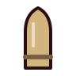
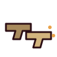

BAŞARIMLAR
0 / 22açıldı
Henüz açılan başarım yok. Bir koşuya başla.
KOLAY
0 / 6

İLK KAN
Bir düşmanı öldür.
0/1
BEŞ DAKİKA
Tek koşuda 300 sn hayatta kal.
TEK KOŞU
Hedef 300 sn
SEVİYE 10
Tek koşuda 10. seviyeye ulaş.
TEK KOŞU
Hedef 10
YERLEŞİK
10 koşu oyna.
0/10

TAMBUR USTASI
Tek koşuda 100 kez doldur.
TEK KOŞU
Hedef 100

TAM KADRO
6 aktif yuvayı doldur.
TEK KOŞU
Hedef 6
ORTA
0 / 9
KIRIM
Tek koşuda 500 düşman öldür.
TEK KOŞU
Hedef 500
KALABALIK KESİCİ
Toplam 10.000 düşman öldür.
0/10.000
GERİ